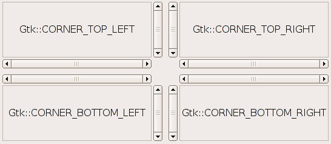

Specifies which corner a child widget should be placed in when packed into a GtkScrolledWindow. This is effectively the opposite of where the scroll bars are placed.

Value | Symbolic name | Description |
| 0 | Gtk::CORNER_TOP_LEFT | Place the scrollbars on the right and bottom of the widget (default behaviour). |
| 1 | Gtk::CORNER_BOTTOM_LEFT | Place the scrollbars on the top and right of the widget. |
| 2 | Gtk::CORNER_TOP_RIGHT | Place the scrollbars on the left and bottom of the widget. |
| 3 | Gtk::CORNER_BOTTOM_RIGHT | Place the scrollbars on the top and left of the widget. |